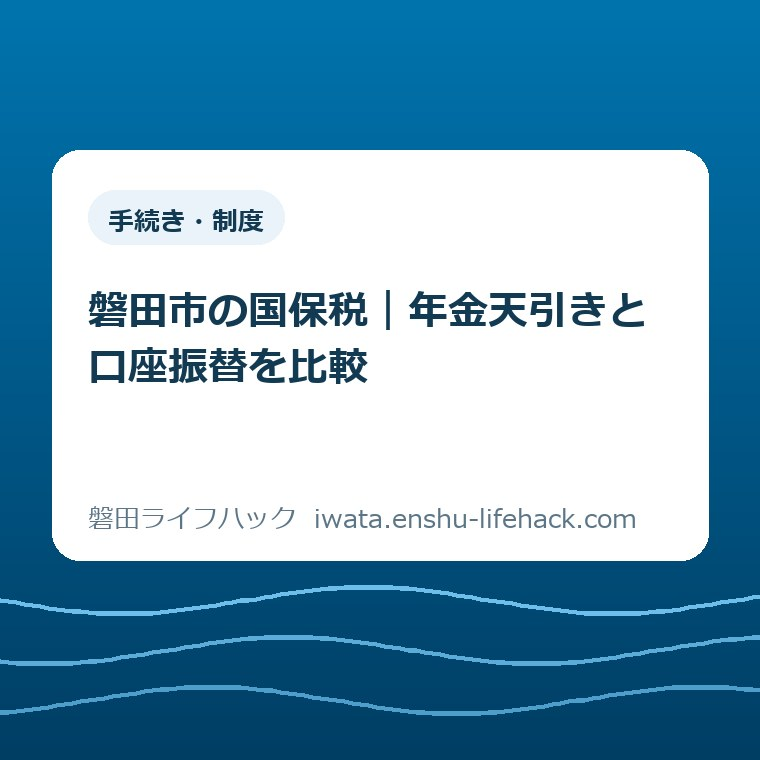
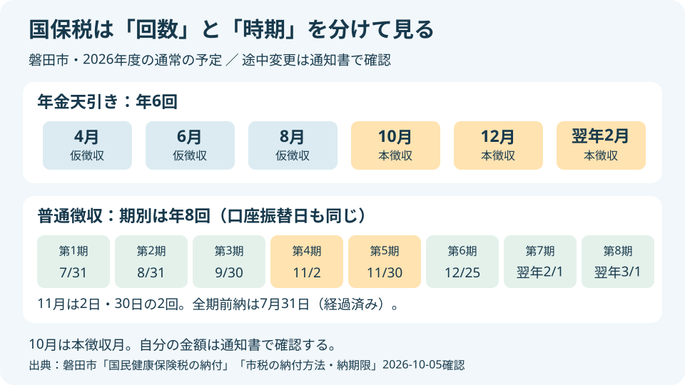
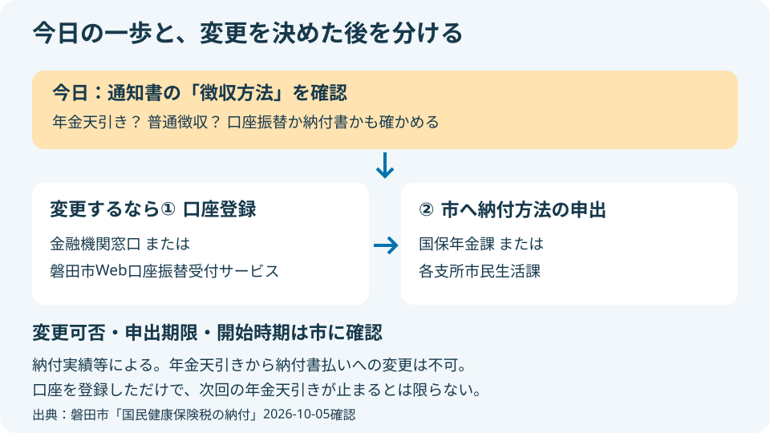

手続き・制度
磐田市の国保税｜年金天引きと口座振替を比較

この記事の要点
Q. 年金天引きと口座振替、どちらが家計を管理しやすい？
A. 世帯ごとの条件で変わりますが、磐田市の国保税は年金天引きが年6回、普通徴収の口座振替が年8回または一括です。10月は年金天引きの本徴収月。2026年度普通徴収第4期は11月2日、第5期は11月30日です。回数だけで選ばず、今日は通知書の徴収方法を確認してください。変更の可否と開始時期は市に確認が必要です。
納付管理に使っている時間も、家計の負担だ
磐田市の国民健康保険税を管理する世帯主と家族は、税額の用意だけでなく、通知書の保管や納付済みの確認も引き受けています。年金の入金、通帳の記帳、水道料金の引き落としを見比べる作業は、ただ「忘れず払う」の一言では片付きません。
年金から天引きされる方が楽なのか、銀行口座でまとめて見た方が楽なのか。家計を預かる人が迷うのには理由があります。支払いが自動になっても、家族が使えるお金を確かめる仕事は残るからです。その手間を小さいものとして扱いたくありません。
私は大石浩之（磐田市／不動産業）です。この記事では、税額の計算や加入手続きの案内とは違い、納める回数と時期を家庭の予定表に置き換えます。制度の適用や変更の可否は、年齢、世帯構成、年金、納付実績などの個別条件で変わります。
先に私の判断を書きます。支払回数が少ない方法を、家計管理が楽な方法と決めつけない。お金を動かす人と確認する人が同じか、別か。家族の段取りに合う方を考えるため、まず現在の徴収方法を知るところから始めます。
公式の比較：年金天引きは6回、口座振替は8回または一括
磐田市公式「国民健康保険税の納付」は、普通徴収を納付書または口座振替で一括か年8回、特別徴収を年金支給日に年6回と案内しています。2026年10月5日に、同ページと「市税の納付方法・納期限」の両方を確認しました。
特別徴収という役所の言葉は、ここでは「世帯主の年金から国保税が先に引かれる方法」です。年金を複数受け取っている場合も、市はそのうち一つから徴収すると説明しています。家族全員の年金から、それぞれ引くという意味ではありません。
普通徴収は、年金天引き以外の方法です。口座振替では、登録した金融機関口座から自動的に引き落とされます。市の案内では全期前納と期別の方法があり、期別なら年度の国保税を8回に分ける納期に合わせて管理します。
| 比較すること | 年金天引き（特別徴収） | 口座振替（普通徴収） |
|---|---|---|
| 回数 | 年6回 | 期別なら年8回。全期前納もある |
| 時期 | 4・6・8月の仮徴収、10・12・翌年2月の本徴収 | 7月から翌年3月までの市の納期 |
| 家計で見るもの | 通知書の天引き額と年金の入金 | 通知書の各期税額と振替口座の残高 |
| 変更の条件 | 口座振替への変更を申請できるが、納付実績等による | 年金天引きからの変更は口座登録に加え市への申出が必要 |
年6回と年8回は、一年度の基本の仕組みを比べた数字です。年度の途中で加入したり、徴収方法が切り替わったりする世帯では、表をそのまま自宅の支払予定にできません。自分の通知書の金額と期別を優先し、読み取れない部分は市に確かめます。
支払いの回数は、保険の給付を受ける回数でも、加入する月数でもありません。口座振替が8回だから8か月分だけ払う、と読まないでください。年6回だから毎回同じ額とも限りません。回数と税額を別の欄で見ると、比較の出発点を取り違えずに済みます。

10月の本徴収と、11月2日・30日の二つの納期
磐田市の特別徴収では、4月・6月・8月が仮徴収、10月・12月・翌年2月が本徴収です。2026年10月は本徴収に当たります。年金天引きの世帯は、10月以降の欄を通知書で確認する時期です。
「本徴収」という言葉を見ても、必ず自分の税額が増えるとは判断できません。今回確認した市の納付ページは徴収月を示していますが、その世帯の各月の税額まではわかりません。8月の天引き額を10月の額だと思い込まず、通知された数字を見ます。
普通徴収では、2026年度第4期の納期限・口座振替日は11月2日です。続く第5期は11月30日です。ここが家計の予定表に置くと見え方の変わる事実です。年8回という数字だけでは、11月に二つの納期があることを見落とします。
「毎月末に1回」と覚えると、11月2日の分を落とすおそれがあります。磐田市公式の納期限表は、口座振替日も同じ欄に載せています。月の名前だけを書くより「11月2日、第4期」「11月30日、第5期」と期別を一緒に書く方が、家族で読み違えにくくなります。
| 期別 | 日付 |
|---|---|
| 全期前納・第1期 | 2026年7月31日 |
| 第2期 | 2026年8月31日 |
| 第3期 | 2026年9月30日 |
| 第4期 | 2026年11月2日 |
| 第5期 | 2026年11月30日 |
| 第6期 | 2026年12月25日 |
| 第7期 | 2027年2月1日 |
| 第8期 | 2027年3月1日 |
全期前納の2026年7月31日は、この記事の公開日である10月5日には過ぎています。一括という選択肢があることと、10月に申し込んで年度当初と同じ扱いになることは別です。今からの切り替えで使える方法と開始期は、市の案内と自分の通知で確認します。
年金天引きは年金支給日に行われると市は説明しています。この記事では、個々の年金の振込日や入金額を推測しません。口座振替との比較は、市が公表する徴収月と納期限まで。家計の支払予定には、通知書と実際の口座記録を重ねて使ってください。
どちらが管理しやすいか：残る確認作業を比べる
年金天引きと口座振替の家計管理の違いは、支払いを手動で行うかどうかより、どの記録を見て使えるお金を判断するかにあります。両方とも自動の仕組みですが、確認する場所と準備する段取りが違います。
私の考えでは、年金天引きが合いやすいのは、年金の入金後に生活費を配分する家庭です。国保税のために別の振替口座へお金を移す作業を増やさずに済みます。ただし、入金の数字だけを見ると国保税の額がわからないため、通知書も手元に残したいところです。
口座振替が合いやすいのは、公共料金や税金を一つの通帳で追い、振替前の残高を確認する人が決まっている家庭だと私は考えます。国保税が口座から出ていく記録を見られる一方、その口座に必要な額を残す仕事は家庭側に残ります。
私は、別居の家族が確認を手伝う場合こそ、方法の名前より「誰が何を見られるか」を先に決めたいです。本人は通知書を持ち、家族は口座の動きしか知らない状態では、どちらの方法でも説明が途切れます。本人の同意の範囲で、徴収方法と期別だけ共有できれば話が進みます。
例えば、年金の入る口座と口座振替の口座が別なら、資金を移す予定が増えます。これは仮の家計例で、実際の相談事例ではありません。引き落とし自体が自動でも、移す人が決まっていなければ管理の負担が減るとは限らない、という比較です。
全期前納を選ぶ場合は、一度の資金準備と残りの生活費を見渡す必要があると私は考えます。期別の回数を減らせる利点はあっても、支出を年度の早い時点にまとめることがその家族に合うとは限りません。通知された額を使い、手元資金を確かめて判断する話です。
水道料金も含めて支払いの管理を見直す場合は、磐田市の水道料金の口座振替とスマホ払いの比較が別の材料になります。ただし、水道料金の申込み条件や支払方法を、そのまま国保税へ当てはめないでください。
良い点：納める動作を減らし、予定を確認できる
磐田市の国保税の納付案内の良い点は、年金天引きと普通徴収の回数、口座振替日、変更の手順を一つのページで確認できることです。市の「市税の納付方法・納期限」でも同じ年度の国保税の納期が確認できます。
私は、家族の用事が重なるときに、毎回納付するための移動や操作を減らせる仕組みは助かると考えます。天引きも口座振替も、支払う動作を予定から外せます。納税する人の努力を前提にするだけでなく、忘れにくい形を選べるのは利点です。
もう一つの良さは、年金天引きに決まったら選択が終わるわけではないことです。市は口座振替へ変更する手順を示し、新たに対象となる世帯への事前通知にも案内を載せています。ご家族の管理方法に合わせて相談する入り口があります。
市公式「市税の納付方法・納期限」は、2026年4月1日からWebでの口座振替申込みができると案内しています。対応する金融機関が示されているため、利用中の口座が対応するかを確認できます。金融機関に出向く以外の登録方法が用意されています。
私には、口座登録の選択肢が増えることは、平日に動く人の段取りを減らす助けに見えます。ただし、年金天引きを止めるための市への申出まで省けるわけではありません。便利な部分と、別に必要な手続きの両方が見える説明で使いたいところです。
注文したい点：「自動なら安心」で説明を終えない
年金天引きから口座振替に変更する場合には、金融機関での口座登録と市への申出という二つの段階があります。市の納付ページは、納付実績によって変更できない場合や、振替不能で未納が生じた場合の扱いも記載しています。
私は、家族へ伝えるときに「自動になるから安心」だけで終える説明には注文があります。年金天引きでは通知書と入金の照合、口座振替では残高の確保が残ります。納める動作が減ることと、確認する仕事がなくなることは違います。
年8回という案内も、生活の言葉に直すなら11月2日と11月30日を並べてほしい。これは私の意見です。回数だけを伝えると、毎月一定の間隔だと受け取る人もいるはずです。納期限の表を家庭のカレンダーに移すところまでが、使える情報だと考えます。
仕組みを責めたいのではありません。公表されている表を読み、家族の予定に置き換える仕事を市民が担っています。文字を大きくすることに加え、「現在の方法」「次の支払い」「変更の開始」を分けて説明する方が、家族間の確認の往復を減らせると私は思います。
切り替える前に：口座登録だけで年金天引きは止まらない
磐田市の案内では、年金天引きから普通徴収へ変更できる納付方法は口座振替に限られます。納付書払いへの変更はできません。市税の普通徴収に納付書という方法があることと、特別徴収から自由に納付書払いへ移れることは別です。
特別徴収の対象は、市が示す五つの要件すべてを満たす世帯です。世帯主が国保の被保険者で、世帯内の国保被保険者全員が65歳以上75歳未満、世帯主の年金が年額18万円以上という条件が含まれます。年金を受け取っているだけでは決まりません。
残る条件は、世帯主の介護保険料と国保税の合計が年金支給額の2分の1を超えないことと、国保税の納付が口座振替ではないことです。家族の人数や年齢が変わった場合など、自分が対象かどうかをこの記事だけで決めず、市からの通知で確認します。
変更の手順は、まず金融機関の窓口または磐田市Web口座振替受付サービスで振替口座を登録し、次に国保年金課または各支所市民生活課へ申請する順序です。申請には納付方法に関する申出書が必要で、市の担当窓口と各支所に備えられています。
金融機関の窓口で口座を登録した場合、市への申請には受付を済ませた口座振替依頼書兼変更届出書の本人控えの写しも必要です。Web受付サービスで登録した場合は控えが不要と市は案内しています。登録方法によって持参物の扱いが違います。
口座振替の開始期は、申込日によって決まると市の「市税の納付方法・納期限」にあります。年金天引きの停止がいつになるかも含め、登録した日に次の徴収が必ず切り替わるとは考えないでください。変更後の通知が出るまで自己判断で支払いを止めないことです。
新たに特別徴収となる世帯には、開始月の3か月前を目安に事前通知が送られます。市は、口座振替へ変更する手続きには期限があると案内しています。全員に共通の申出期限をこの記事で置かず、届いた通知文書に記載された期限を確認します。
市税などの納付実績により変更できない場合があります。口座振替開始後に振替不能による未納が生じると、特別徴収へ変更される場合もあります。変更できるという説明は無条件の約束ではありません。自分の世帯の可否は市に確かめる必要があります。

対案・結論：今日は通知書の徴収方法だけ確認する
磐田市の国保税の納付方法を比較する今日の一歩は、手元の通知書で「普通徴収」「特別徴収」などの徴収方法の記載を確認することです。切り替えの申込みを今日中に終える必要はありません。現在の方法がわかれば、次に使う日程表を選べます。
私は、家族の用事をこれ以上増やさないためにも、最初の作業を一つに絞りたいです。通知書を開いて方法を読み、「年金天引き」「普通徴収の口座振替」「納付書」など、自宅の状態を言葉で確認します。普通徴収という文字だけで口座登録済みと判断しません。
通知書で方法が読み取れなければ、不明のままで構いません。口座登録の有無や通知のどの欄を見るかを国保年金課に問い合わせるとき、通知書が手元にあると確認しやすくなります。通帳の入金額だけから天引きの有無を推定する必要はありません。
変更を考える段階になったら、「口座振替へ変更できるか」「申出期限はいつか」「何月・何期から始まるか」を市へ確認します。支所を利用する予定の方は、磐田市の4支所窓口でできることも窓口選びの参考になります。
支払い自体が難しい場合は、管理方法の比較だけでは解決しません。市の国保税の納付ページは、納期限までに納められない事情がある方に収納課への早めの相談を案内しています。電話は0538-37-4906です。減免の制度に関する相談先は国保年金課です。
国保の加入状況という別の背景を知りたい場合は、磐田市の国保加入者の変化を読んだ記事へどうぞ。加入者数の動きと、その世帯の税額や徴収方法は別の話です。市全体の数字を家庭への答えに置き換えないように読んでください。
大石の視点：自動の仕組みに、家族の確認役を一人置く
国保税の家計管理について、私は「いくら払うか」と同じくらい「誰がいつ確かめるか」で考えます。年6回なら楽、年8回なら面倒と数えるより、通知書を見られる人と残高を確かめる人が決まっているかを見たい。これは公表制度とは分けた、私の意見です。
私自身、年金天引きと口座振替のどちらを勧めるかは、家族の管理の仕方がわからなければ迷います。入金後の生活費だけを見渡す方が楽な家庭も、支出を同じ口座で追う方が楽な家庭もあるからです。どちらか一方を全世帯の正解にする材料はありません。
制度を比較した結果、今のままがよいと判断することもあるはずです。支払方法を変えることを成果にしなくても、本人と家族が現在の方法を同じ言葉で説明できれば、次の確認がしやすくなります。私は、日々の段取りが一つ減るかどうかで選びたいです。
2026年10月5日時点の確認では、10月は本徴収、普通徴収第4期は11月2日です。納付実績や世帯の条件で扱いは変わります。この記事を読んだ後の最初の作業は通知書の徴収方法を確認すること。その先の変更可否・期限・開始時期は、最後に必ず磐田市公式ページと市の担当窓口で確認してください。
よくある質問
磐田市の国保税の納付方法について、回数、変更先、開始時期の三つを市の公式案内に沿って整理します。
年金天引きと口座振替では、国保税を払う回数が違いますか？
磐田市の国保税は、年金天引きが年6回、普通徴収の口座振替が期別なら年8回です。口座振替には全期前納もあります。2026年度第4期は11月2日、第5期は11月30日です。途中加入や変更のある世帯は、回数だけで判断せず、自分の通知書の徴収方法・期別・税額と市の公式案内を確認してください。
年金天引きをやめて、納付書払いに変更できますか？
磐田市の案内では、年金天引きから普通徴収への変更は口座振替に限られ、納付書払いには変更できません。納付実績により変更できない場合もあります。希望する場合は口座登録の後、市へ納付方法の申出が必要です。新たな対象世帯の事前通知には手続き期限が案内されるため、自分の通知と市の公式ページを確認してください。
口座を登録したら、次の年金天引きは自動で止まりますか？
口座登録だけで変更手続きは完了しません。磐田市は、金融機関窓口または市Webサービスでの口座登録後、国保年金課か各支所市民生活課への申請を案内しています。開始期は申込日などによるため、次回から切り替わると決めつけず、変更可否、申出期限、開始時期を市に確認し、届いた通知に従ってください。
参考にした公式情報
- 国民健康保険税の納付／磐田市（2026年4月6日更新、2026年10月5日確認）
- 市税の納付方法・納期限／磐田市（2026年4月1日更新、2026年10月5日確認）
最終確認日：2026-10-05 ／ 本記事は公表情報と執筆者の見解を分けて記載しています。制度・数値・公開状況は変更される場合があるため、最新情報は磐田市公式ページでご確認ください。